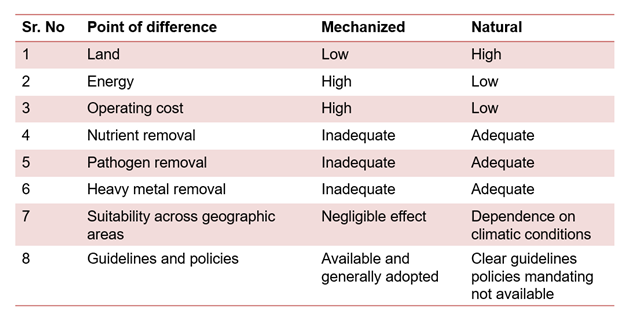
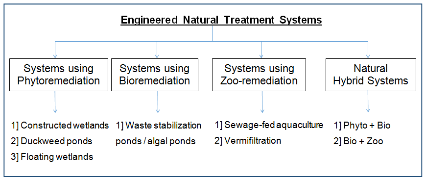
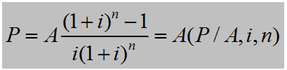
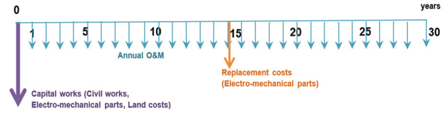
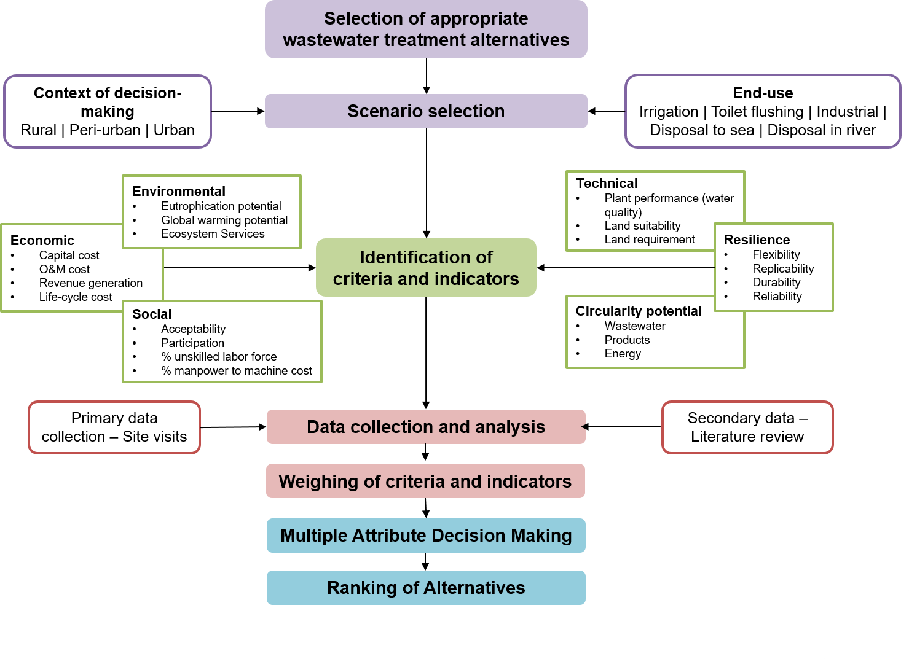
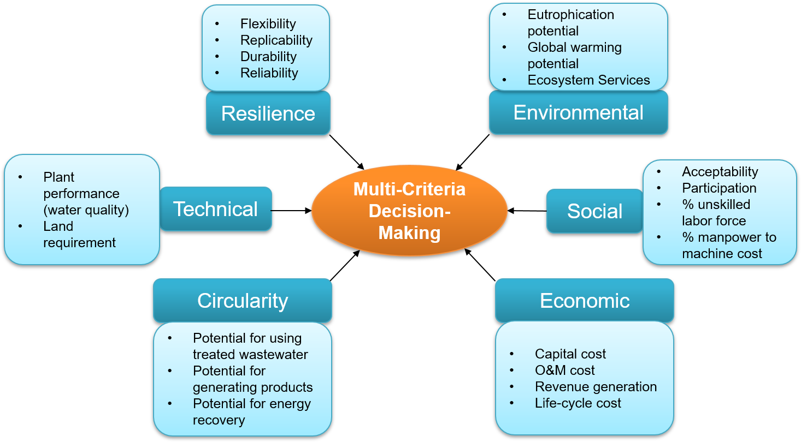

The treated wastewater has the potential to divert the unused freshwater to other sectors or to the people deprived of water access! Plan your sewage treatment facilities wisely to ensure optimal use of resources!
The problems (urban water management and sewage treatment) of every region and city are different and hence the solution (choice of sewage treatment technology) should be customized to that situation.
Welcome to JalVishwa!
A decision support tool to select an appropriate treatment technology for ensuring sustainable and resilient sewage treatment in your city!
Need for appropriate technology selection
Investment in infrastructure for wastewater treatment is costly and the urban local bodies should properly investigate before making huge investments in sewage treatment facilities. A large number of treatment technologies have experimentally proven to successfully remove various contaminants from wastewater. Each technology has its own advantages and limitations.
It is the situation, and not the technology, that decides the appropriateness of technology selection (Kalbar et al., 2012). The one-size-fits-all approach fails in managing the liquid waste, hence, it is important to analyze the location where wastewater treatment is to be implemented. The existing infrastructure, population density, awareness level of stakeholders, availability of skilled manpower, funds availability, end use of treated wastewater etc. are a few of the factors to be considered for decision-making. However, decision-makingoften lacks the inclusion of multiple criteria, and public utilities tend to create infrastructure on the basis of capital cost alone. Lack of consideration of O&M and planning infrastructure from a holistic perspective results in the failure of sustenance of treatment technologies.
A developing country like India has a huge gap in sewage generation and treatment capacity. The Government has allocated funds for sewage treatment, and the focus should be on creating 'sustainable and resilient' sewage treatment plants. The infrastructure once created is difficult to dismantle and hence inappropriate technology selection unnecessarily results in wastage of financial and material resources (Kalbar et al., 2016). Hence, this decision support tool aims to facilitate Urban Local Bodies to select an appropriate technology based on the locality or the city, and ensures maximum sustainability and resilience with minimum costs.
Broadly speaking, wastewater treatment technologies can be categorized as physicochemical and biological. Physicochemical treatment involves unit operations such as sedimentation, adsorption, and filtration. Biological processes can either be aerobic or anaerobic, depending on the presence or absence of oxygen. Aerobic processes are of two types. Suspended growth, in which the biomass remains in a suspended form in the wastewater, and attached growth, in which the biomass gets attached to media used in the treatment systems. Many technology variants are available in market; however, the basis of treatment and the scientific principles are essentially the same, and any sewage treatment technology has to fall in one of the above classifications.
The technologies achieving good removal efficiencies are either costly due to the energy demand or require large land resulting in an increased land cost. Thus, wastewater treatment often involves a trade-off between energy and land. This tradeoff results in a broad classification of treatment technologies as mechanized and natural treatment systems. Mechanized treatment systems require less land area but higher energy whereas natural treatment systems are low cost treatment alternatives requiring land.

Mechanized sewage treatment systems are not adequately capable of removingnutrients nitrogen and phosphorus thereby causing high sludge production and eutrophication issues on disposal in water bodies. Further, the mechanized systems also lack capacity of coliform removal. This makes the effluent unsuitable and poses a risk on its reuse. Even if some advanced treatment technologies are available, they are very costly and demand skilled technical expertise. However, natural treatment systems have the potential to achieve good nutrient as well as coliform removal at an affordable cost. It is of utmost importance to explore these wastewater treatment solutions to augment the existing sewage treatment capacity.
The engineered natural treatment systems have broadly been categorized under the heads of systems using phytoremediation (plants); bioremediation (microbes) and zoo-remediation (animals)(Chaturvedi, 2008). The term ‘phyto’ means plants. The wastewater treatment systems involving the use of plants for nutrient and metal uptake or those using algae are considered under phytoremediation. Bioremediation involves the use of microorganisms whereas zoo-remediation involves the use of animals such as fish or earthworms to carry out wastewater treatment.
Considering the numerous advancements in treatment technologies and the rise in patented technologies, the above categorization of engineered natural wastewater treatment systems can be slightly modified to include a fourth category termed ‘natural hybrid systems’ in the classification.

The perilous balance between the growing water demands and supplies has led to a forceful adoption of recycling and reusing water.However, hardly any of the technologies produce an effluent of recyclable quality for high-end applications at an affordable cost. Each category of wastewater treatment i.e. mechanized and natural has its own advantages and disadvantages making it appropriate for different land settings. The land requirement mainly limits the full-fledged use of non-mechanized treatment technologies especially in urban areas, while it is the enormous operational cost limiting the adoption of mechanized treatment in rural and peri-urban areas. Hence, it is necessary to come up with intelligent combinations of treatment technologies to achieve effluent which can be reused and recycled in different scenarios. Amidst the stringent norms by regulatory authorities such as NGT, the challenge is to attain the required wastewater disposal norms while adhering to international commitments such as Sustainable Development Goals (SDG). The coupling of mechanized and natural treatment systems as a full-fledged strategy to achieve sustainable water management is suggested as a novel approach termed as the ‘Hybrid Treatment Systems’ approach.
Need for multi-criteria decision-making
A plethora of technologies are available in the market, each of them have certain advantages and disadvantages, making them suitable in certain localities or under certain contexts. The conventional approach of selecting technologies based on capital cost and a one-size-fit-all approach in planning has resulted in several problems and failures of municipal STPs due to multiple issues. Further, to overcome the challenges of wastewater sector, it is becoming increasingly important to address the decision-making from all dimensions of economic, environmental, social, technical essentially making technology selection and infrastructure planning a complex problem. The units and means of gauging various parameters are very wide and hence, simultaneous inclusion of different dimensions needs multi-criteria decision-making techniques to bring all parameters on a comparable level. Hence, the use of multi-criteria decision-making methods has gained importance in wastewater treatment.
Several communities are eager to improve the sanitation in their locality but either face budget issues or lack technical assistance. The water bodies in India are deteriorating due to disposal of untreated wastes. Elected representatives in developing countries taking measures to improve the conditions of water bodies require strong base to justify the investments (Kalbar et al., 2016). A decision support tool to facilitate the urban and rural local bodies select an appropriate natural treatment system could significantly contribute to improving the wastewater treatment infrastructure in India.
The objective of a Decision Support System (DSS) is to find out a suitable technology that maximizes the quantity of treated water with minimal costs and environmental impacts. DSS have the advantage of presenting a comprehensive evaluation in minutes, for which urban local bodies would require months. The traceability of results and the ease of presenting them to persons lacking technical background makes DSS a popular choice. DSS helps the planners, decision makers and variety of stakeholders to tackle the concept of sustainability from multiple dimensions, rather than only focusing on treatment efficiency of technologies or capital cost of the infrastructure.
Decision Support Systems
Life cycle assessment, mathematical models, multi-criteria decision making and intelligent DSS are commonly adopted approaches in decision-making for wastewater treatment. The focus of different studies includes design, energy consumption, operational optimization, improved effluent quality and environmental sustainability. Although mathematical models were popular due to their widespread knowledge; however, Multi-Criteria Decision-Making(MCDM) approach is most reliable to achieve optimization of wastewater treatment plants. Multi-Attribute Decision-Making (MADM) is majorly associated with decision-making problems involving a finite number of alternatives (known as discrete variable problems), whereas Multi-Objective Decision-Making (MODM) is concerned with decision-making problems with an infinite number of alternatives (known as continuous variable problems). Technique for Order of Preference by Similarity to Ideal Situation (TOPSIS) and Analytical Hierarchy Process (AHP) are reported to be the commonly used multi-criteria decision attribute tools. The wastewater treatment technology selection problem involves decision making based on a finite number of alternatives and criteria. Researchers have identified a number of relevant criteria covering technical, economical, societal, and other aspects which can be either quantitative or qualitative in nature.
Types of attributes
In MADM, preference for a particular alternative can be measured on an ordinal scale or on a cardinal scale. With ordinal scales, non-numerical properties, such as ratios or intervals, are used; characterization of objects is purely relational, and objects are rank ordered. Intensity of preference is not apparent from ordinal scales. Ordinal scales can be expressed in terms of numbers or verbal rankings, e.g., 1, 2, 3, 4, etc. or as bad,good, and excellent. Cardinal scales assign numerical values (numbers, intervals, ratios, etc.) to objects. Attributes can be of the following three types:
1. Benefit attributes offering increasing monotonic utility i.e. greater the attribute value, higher is its preference. For example, fuel efficiency.
2. Cost attributes offering decreasing monotonic utility i.e. lower the attribute value, higher is its preference. For example, production cost.
3. Non-monotonic attributes offeringnon-monotonic monotonic utility i.e. the maximum utility is locatedsomewhere in the middle of the attribute range. For example, room temperature in an office and blood sugar level in a human body.
Wastewater treatment involves a trade-off of land vs. energy. Mechanized Treatment Systems (MTS) require less area but are energy-intensive and hence, fail to sustain in the long run. On the contrary, Natural Treatment Systems (NTS) mimic the processes occurring in nature, and can adequately remove pathogens, nutrients and heavy metals using negligible energy. NTS are capable of meeting the stringent norms mandated by the regulatory authorities and are sustainable as compared to MTS. However, sewage treatment is not prioritized by politicians and also stakeholders are not willing to invest in the same. Hence, the large land requirement for NTS is a major constraint for the large-scale implementation and upscaling of NTS. Thereby, it becomes important to rationally design the natural treatment systems to ensure optimum usage of land. Biotic components such as microbial organisms and macrophyte speciesplay a key role in the wastewater treatment using NTS, hence, geographical factors such as temperature, radiation and ground strata significantly affect the performance of NTS which in turn affect the land requirement and capital cost.
Land suitability analysis using Geographic Information System (GIS) has commonly been used by urban planners for the efficient utilization of land resources and management of green spaces. NTS such as constructed wetlands add to the aesthetic of surroundings and can also be used for landscaping purposes to achieve the norms for green spaces in urban areas. However, there are hardly any studies analyzing the land suitability for the appropriateness of wastewater treatment technology for the given location.
Need for LCC
The common tendency of the Urban Local Bodies (ULBs) is to adopt treatment technologies based on capital costs. However, the O&M aspect, which plays a significant role in the life cycle of the STP, is ignored in this process as a result of which most of the times the systems often fail in the long run. Lack of consideration of O&M costs while planning infrastructure also leads to a failure due to the paucity of funds with the municipal corporations or ULBs to operate the systems. The extensive energy consumption leads to enormous electricity bills posing an economic burden. Failure in paying the bills during O&M of plants leads to MTS plants becoming defunct within a short span. Therefore, it becomes necessary to include O&M costs in the decision-making.
LCC Methodology
To compare the treatment systems, it is necessary to carry out Life Cycle Costing (LCC) for the entire lifetime of the treatment plant. In this tool, the present worth method of LCC is used. Present Value or the Present Worth is the sum of all possible costs incurred in the future, that are discounted to the present year of construction, and the initial investment costs. The detailed methodology can be found in IS 13174 Life Cycle Costing (Part 1 and 2). All the cash flows in the functional life of Wastewater Treatment Plants (WWTPs) are analyzed for a functional life of 30 years as WWTPs typically have a design life of 30 years. In the present worth method, a discount (interest) rate is used to convert the future expenses to their present value. Hence, the expenses incurred at the beginning are not required to be transformed.
The present worth of amount (P) of a single payment made in the future (F), which will actually be received after n periods at the rate of interest i, compounded after every interest period, is given by,
where, (P/F, i, n) is known as a single-payment present worth factor.
The present worth of a uniform payment mode (A) compounded after every n interest periods at an interest rate of i, is given by:

where, (P/A, i, n) is known as the uniform-payment series present worth factor.
Cost components considered
1. Capital cost (includes land cost, civil and electromechanical costs)
2. O&M costs
a. Energy
b. Labour/ manpower
c. Consumables (chemicals)
d. Operation and maintenance
3. Replacement costs
4. Revenue generation
Figure below shows a typical cash flow diagram for a wastewater treatment plant.

The figure represents the decision-making framework for technology selection adopted in the decision support tool.

Source: Kalbar and Lokhande (2023)
Several wastewater treatment technology alternatives are prevalent. Depending on the context decision-making, technology might be needed to be chosen from among few options. This tool has an inbuilt database for 11 treatment technologies, out of which 6 are mechanized and 5 are natural treatment technologies. Apart from these, any new technology can be added as an alternative, provided the technology details as per the technology fact-sheet template are entered by the user.
Scenario selection
Secondly, the scenario needs to be stated, which will help in criteria identification and their weighing. Two aspects are considered in scenario selection. The context of decision-making, whether the location of STP is in an urban, peri-urban or rural region. As this might affect land availability, land price, manpower availability, wastewater characterization etc. Accordingly, the weights for different criteria might vary for effective decision-making. The second factor for defining scenarios is the fate of the treated wastewater, whether it has an enduse for irrigation or landscaping or gardening, or is used to cater non-potable water demands such as toilet flushing or for high-end industrial applications, or is disposed to sea or the river. The end use affects the water quality standards to be achieved at the STP. The scenarios will be defined as a combination of the context of decision-making and the end-use application.
The methodology developed in this work effectively captures regional and local societal priorities in terms ofweights for criteria for each scenario and translates them into the mathematical algorithms of the MADM methodology. The criteria and indicators need to be weighed, and scenario-based decision-making can help in better weighing by prioritizing appropriate indicators on a case-specific basis.
Criteria and Indicator Selection
Six criteria are broadly considered in the decision support tool.
From the sustainability perspective, economic, social and environmental criteria form the pillars of sustainability. Additionally, technical criteria are also significant for ensuring the sustenance of plant by the operators. Further, amidst freshwater scarcity and resource constraints, circular economy is gaining significance in the wastewater sector. Hence, the circularity potential of a particular treatment technology is also significant in today’s time. Lastly, in the wake of climate change and occurrence of extreme events, it is necessary for the STPs to be resilient enough to resume service without causing much damage through service disruption to the public. Figure shows the various indicators that can be used to quantify each of the criteria considered for technology assessment.

Source: Kalbar and Lokhande (2023)
The data collection for 11 technologies will be carried out through primary data collection, site visits, questionnaires and surveys. Additionally, secondary data from literature review will also be resorted to for preparing the technology factsheets. A dynamic life cycle costing module is developed for representative analysis of life cycle costs through the net present worth of the present as well as future investments.
Multi-attribute decision-making
The MADM method used in the decision support tool is TOPSIS. The method is based on a compensatory approach and utility is estimated by comparing each alternative directly depending on data in the decision matrices and weights. The method assumes that each attribute has amonotonically increasing or decreasing utility. The best alternative is identified by considering both thepositive ideal solution and negative ideal solution. The disadvantage or unfavourable value in one attribute is offset byan advantage or favourable value in some other attribute. This mimics human thinking where humans always think of both positive and negative qualities of the alternativeto choose thebestavailable optionamongall. The geometric concept of distance measurement is used in TOPSIS as aproxyforhumanpreference, which is a suitable approach for the decision-making with regard to wastewater management.The advantages of TOPSIS over other MADM techniques are:
(i) a sound logic that represents the rationale of human choice;
(ii) a scalar value that accounts for both the best and worst alternatives simultaneously;
(iii) a simple computation process that can be easily programmed into a spreadsheet; and
(iv) the performance measures of all alternatives on attributes can be visualized on a polyhedron, at least for any two dimensions.
Ranking of alternatives
It should also be noted that it is not possible to achieve the optimal solution for each scenario because there are a finite number of alternatives available. Therefore, the best available solution has to be selected. TOPSIS. Further, there is uncertainty involved in decision-making at various steps, particularly in data collection. A one-size-fit-all approach does not work in wastewater treatment. Thus, although the data for technologies is compiled through primary and secondary data collection, there might be variation in the actual plant performance. Hence, a small difference of 0.1 or 0.25 in the technology scores does not necessarily have a huge implication. Accounting for these uncertainties in analysis, the technology having comparable scores are clubbed as most preferred alternatives.